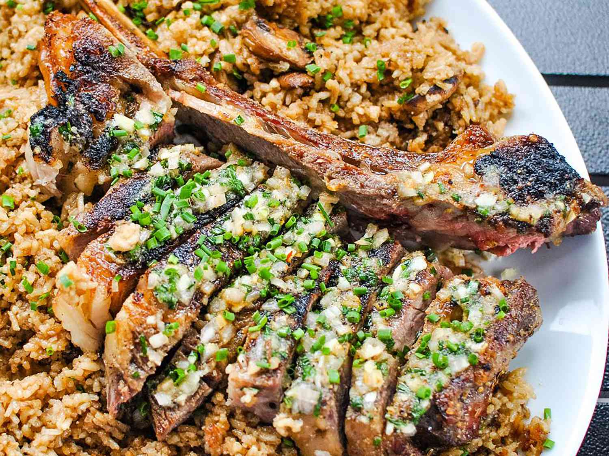

The best Grilled tomahowk steak, from Manila
Ingredients
- 1 tablespoon brown sugar
- 1 tablespoon Montreal steak seasoning
- 2 teaspoons garlic powder
- 2 teaspoons onion powder
- 1 (2 3/4 pound) tomahawk steak (3-inch thick bone-in ribeye)
Compound Butter
- 1/4 cup salted butter, at room temperature
- 1 tablespoon minced shallot
- 1 clove garlic, minced
- 1 tablespoon chopped fresh chives
- 2 teaspoons reserved steak rub
Steps
- To make steak rub, place brown sugar, Montreal steak seasoning, garlic powder, and onion powder in a small airtight container; shake or stir to combine. Set aside 2 teaspoons steak rub to use in compound butter.
- Place steak on a half sheet pan, and rub steak on top, bottom, and sides with remaining steak rub until well coated. Place steak, uncovered, in the refrigerator to dry-brine overnight.
- For compound butter, place butter, shallot, garlic, chives, and the reserved 2 teaspoons steak rub in a small bowl. Mash together with a fork until evenly combined. Spoon butter into a small airtight container, cover, and refrigerate until ready to use.
- Remove steak from the refrigerator 1 hour before cooking to take the chill off. It will cook on the sheet pan that you used for dry-brining.
- Preheat the oven to 300 degrees F (150 degrees C). The reverse sear method is used to cook this big steak, so you will need an instant-read thermometer. If you are using a digital meat thermometer, set the internal temperature to 110 degrees F (43 degrees C).
- Bake steak on the sheet pan in the preheated oven until an instant-read thermometer inserted into the center reads 110 degrees F (43 degrees C), about 45 minutes. Begin checking the temperature at 30 minutes.
- During the last 15 to 20 minutes of cooking time, preheat an outdoor grill for high heat and lightly oil the grate.
- When steak reaches an internal temperature of 110 degrees F (43 degrees C) measured with an instant-read thermometer, remove it from the oven.
- Grill steak directly on the grates of the preheated grill; sear on both sides, about 2 minutes per side. This is a fatty piece of meat, so be mindful of flame flare-ups. The internal temperature should now read 125 to 135 degrees F (51 to 57 degrees C) for medium rare.
- Remove steak from the grill, and smear compound butter over top. Let butter melt into the steak, heating up the fresh garlic, shallots, and chives. Let steak rest for 10 minutes.
- Slice steak and serve with accumulated juices and melted butter. Be sure to serve the bone–someone will want to gnaw on it!
Return to top
Return to main page